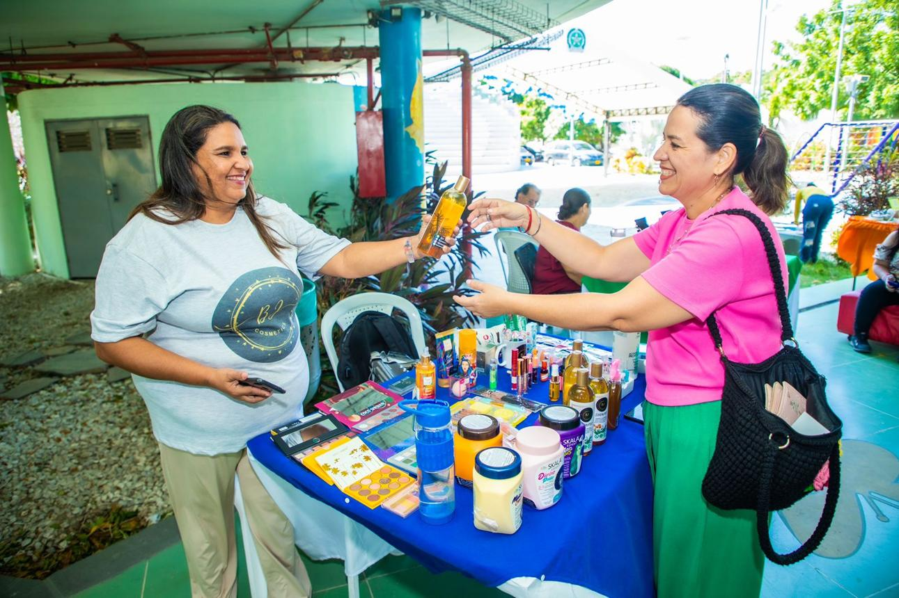

Tu emprendimiento tiene algo especial que compartir con el mundo. Aprende a dar a conocer tus productos y servicios, atraer nuevos clientes y aprovechar las oportunidades de tu comunidad.
En este espacio encontrarás herramientas prácticas para mostrar lo que haces, promocionar tu negocio y fortalecer tu presencia en el entorno local y digital.
Aprende a presentar tu negocio, comunicar qué ofreces e identificar aquello que hace especiales tus productos o servicios.
Comenzar lecciónDescubre cómo tomar fotografías de tus productos, escribir mensajes llamativos y elaborar publicaciones que despierten el interés de tus posibles clientes.
Comenzar lección
Conoce cómo participar en ferias, eventos comunitarios y actividades locales para promocionar tus productos, crear contactos y encontrar nuevas oportunidades.
Comenzar lecciónAprende a utilizar WhatsApp, Facebook e Instagram para compartir tus productos, comunicarte con tus clientes y ampliar el alcance de tu emprendimiento.
Comenzar lección